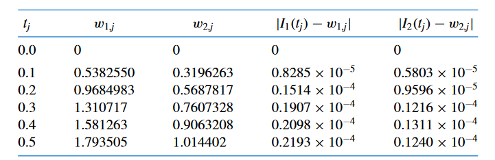

%function_file
function [t, w] = adams2(f, a, b, n, alpha)
% Inisiasi variabel awal
h = (b - a) / n;
t = zeros(n + 1, 1);
w = zeros(n + 1, 1);
t(1) = a;
w(1) = alpha;
% Mencari t(2) dan w(2) menggunakan Runge-Kutta orde 4
i = 1;
t(i + 1) = t(i) + h;
m1 = h * f(t(i), w(i));
m2 = h * f(t(i) + (h/2), w(i) + (m1/2));
m3 = h * f(t(i) + (h/2), w(i) + (m2/2));
m4 = h * f(t(i + 1), w(i) + m3);
w(i+1) = w(i) + (m1 + 2*m2 + 2*m3 + m4) / 6;
% Algoritma utama Adams-Bashforth
for i = 2:n
t(i + 1) = t(i) + h;
k1 = f(t(i), w(i));
k2 = f(t(i-1), w(i-1));
w(i+1) = w(i) + (h/2) * (3*k1 - k2);
endfor
endfunctionWeek-03 (Multistep dan Sistem persamaan differential)
Kembali ke Persamaan Diferensial Numerik
Multistep
Metode-metode sebelumnya, seperi Euler, Runge-Kutta, dan kawan-kawannya adalah metode jenis one-step, karena kita hanya menggunakan informasi dari satu nilai \(t_{i}\). Pada modul berikut akan dijelaskan mengenai metode multistep, dimana kita menggunakan lebih dari satu nilai \(t_{i}\) untuk membuat aproksimasi.
Terdapat dua jenis metode multistep, yaitu:
Multistep eksplisit, dimana kita mengaproksimasi nilai pada \(t_{i+1}\) menggunakan nilai \(t\) sebelumnya.
Multistep implisit, dimana kita mengaproksimasi nilai pada \(t_{i+1}\) menggunakan nilai pada \(t\) sebelumnya, sekaligus nilai pada \(t_{i+1}\) itu sendiri.
Untuk bagian awal, kita hanya akan menggunakan multistep eksplisit, dan multistep implisit akan dijelaskan kemudian menggunakan cara lain.
Multistep Eksplisit: Metode \(n\)-step Adams-Bashforth
Metode \(n\)-step Adams-Bashforth menggunakan \(n\) titik sebelumnya untuk mengaproksimasi nilai. Karena metode ini adalah metode multistep, maka \(n\) nilai awalnya pun harus diperoleh terlebih dahulu. Misal kita ingin menggunakan metode Adams-Bashforth orde 3 , maka \(w_{1}, w_{2}\), dan \(w_{3}\) harus ada terlebih dahulu sebelum dilanjutkan ke metode Adams-Bashforth. Nilai-nilai awal tersebut dapat diperoleh dari metode-metode one-step sebelumnya, seperti metode Runge-Kutta, yang akan kita gunakan.
Berikut rumus untuk metode \(n\)-step Adams-Bashforth, masing-masing sesuai dengan jumlah step nya.
- Two-step Adams Bashforth
\[ \begin{gathered} w_{0}=\alpha, \quad w_{1}=\alpha_{1}, \\ w_{i+1}=w_{i}+\frac{h}{2}\left[3 f\left(t_{i}, w_{i}\right)-f\left(t_{i-1}, w_{i-1}\right)\right] \end{gathered} \]
- Three-step Adams-Bashforth
\[ \begin{gathered} w_{0}=\alpha, \quad w_{1}=\alpha_{1}, \quad w_{2}=\alpha_{2}, \\ w_{i+1}=w_{i}+\frac{h}{12}\left[23 f\left(t_{i}, w_{i}\right)-16 f\left(t_{i-1}, w_{i-1}\right)+5 f\left(t_{i-2}, w_{i-2}\right)\right] \end{gathered} \]
- Four-step Adams-Bashforth
\[ \begin{gathered} w_{0}=\alpha, \quad w_{1}=\alpha_{1}, \quad w_{2}=\alpha_{2}, \quad w_{3}=\alpha_{3} \\ w_{i+1}=w_{i}+\frac{h}{24}\left[55 f\left(t_{i}, w_{i}\right)-59 f\left(t_{i-1}, w_{i-1}\right)+37 f\left(t_{i-2}, w_{i-2}\right)-9 f\left(t_{i-3}, w_{i-3}\right)\right] \end{gathered} \]
- Five-step Adams-Bashforth
\[ \begin{gathered} w_{0}=\alpha, \quad w_{1}=\alpha_{1}, \quad w_{2}=\alpha_{2}, \quad w_{3}=\alpha_{3}, \quad w_{4}=\alpha_{4}, \\ w_{i+1}=w_{i}+\frac{h}{720}\left[1901 f\left(t_{i}, w_{i}\right)-2774 f\left(t_{i-1}, w_{i-1}\right)+2616 f\left(t_{i-2}, w_{i-2}\right)\right. \\ \left.-1274 f\left(t_{i-3}, w_{i-3}\right)+251 f\left(t_{i-4}, w_{i-4}\right)\right] \end{gathered} \]
program untuk two-step Adams-Bashforth:
Berikut ini adalah contoh pengerjaaannya dengan menggunakan metode two-step Adams-Bashforth.
%script file
f = @(t, y) (y - t ^ 2 + 1);
a = 0;
b = 2;
alpha = 0.5;
n=20
[t1, w1] = adams2(f,a,b,n,alpha)
[t1,w1]
sln = @(t) (t + 1) ^ 2 - 0.5 * exp(t);
fplot(sln, [0, 2], 'k');
hold on;
scatter(t1, w1, 'r');Multistep Implisit: Metode \(n\)-step Adams-Moulton
Serupa dengan metode adams-bashforth, bedanya persamaan iteratif \(w_{i+1}\) belum dalam bentuk yang dapat dihitung langsung (melainkan bentuknya implisit). Berikut ini adalah list persamaan iteratifnya (diambil dari buku burden).
Adams-Moulton Two-Step Implicit Method \[ \begin{aligned} w_0 & =\alpha, \quad w_1=\alpha_1, \\ w_{i+1} & =w_i+\frac{h}{12}\left[5 f\left(t_{i+1}, w_{i+1}\right)+8 f\left(t_i, w_i\right)-f\left(t_{i-1}, w_{i-1}\right)\right], \end{aligned} \]
Adams-Moulton Three-Step Implicit Method
\[ \begin{aligned} w_0 & =\alpha, \quad w_1=\alpha_1, \quad w_2=\alpha_2, \\ w_{i+1} & =w_i+\frac{h}{24}\left[9 f\left(t_{i+1}, w_{i+1}\right)+19 f\left(t_i, w_i\right)-5 f\left(t_{i-1}, w_{i-1}\right)+f\left(t_{i-2}, w_{i-2}\right)\right], \end{aligned} \]
- Adams-Moulton Four-Step Implicit Method
\[ \begin{aligned} w_0= & \alpha, \quad w_1=\alpha_1, \quad w_2=\alpha_2, \quad w_3=\alpha_3, \\ w_{i+1}= & w_i+\frac{h}{720}\left[251 f\left(t_{i+1}, w_{i+1}\right)+646 f\left(t_i, w_i\right)\right. \\ & \left.-264 f\left(t_{i-1}, w_{i-1}\right)+106 f\left(t_{i-2}, w_{i-2}\right)-19 f\left(t_{i-3}, w_{i-3}\right)\right], \end{aligned} \]
Bentuk umum program yang akan dihasilkan
%function_file
function [t, w] = adam-moulton-general(f, a, b, n, alpha)
[
Inisialisai awal ...
]
[
Mencari nilai w_i lainnya yang dibutuhkan dengan rungge kutta jika
nilai awal tersebut tidak diberikan dengan runge-kutta
]
% Algoritma utama Adams-Bashforth
[
Iteratif algoritma adams-moulton
pada saat mencari $w_{i+1}$ gunakan metode numerik favorit anda.
]
endfunctionTinjau bahwa, jika \(f\) linear, kita bisa mencarinya nilai bentuk explisit \(W_{i+1}\) dengan mudah. Dengan demikian, kita bisa mengganti metode numerik yang digunakan untuk mencari \(w_{i+1}\) dengan metode analitik.
Multistep: Metode \(n\)-step Adams-Moulton-Bashforth (predictor-corrector)
Menggunakan nilai \(w_{i+1}\) yang didapat secara implisit dari metode adams-moulton, kita masukkan ke dalam metode adams-bashforth untuk mengupdate nilai nilai \(w_{i+1}\) kembali.
Lihat contoh pada pada sub-chapter berikutnya.
solusi numerik sistem Persamaan Differential
Rungge kutta untuk sistem persamaan differential (vectorize)
%function_file
function [t,w] = rk4_sys(f, a, b, n, y0)
%f :differential equation y_p = f(t,y)
%a :initial time
%b :final time
%n :number of steps
%y0 :initial value
h=(b-a)/n;
t=[a:h:b];
s= length(y0);
w=zeros(s,n+1);
w(:,1)=y0;
for i=1:n
k1=f(t(i),w(:,i));
k2=f(t(i)+h/2,w(:,i)+h*k1/2);
k3=f(t(i)+h/2,w(:,i)+h*k2/2);
k4=f(t(i)+h,w(:,i)+h*k3);
w(:,i+1)=w(:,i)+h*(k1+2*k2+2*k3+k4)/6;yang perlu dicatat disini fungsi f merupakan fungsi anonimus yang mengeluarkan vektor hasil evaluasinya.
berikut ini adalah contoh penggunaan fungsi rk4_sys untuk sistem persamaan differential.
\[
\begin{aligned}
& I_1^{\prime}=f_1\left(t, I_1, I_2\right)=-4 I_1+3 I_2+6, \quad I_1(0)=0 \\
& I_2^{\prime}=f_2\left(t, I_1, I_2\right)=0.6 I_1^{\prime}-0.2 I_2=-2.4 I_1+1.6 I_2+3.6, \quad I_2(0)=0 .
\end{aligned}
\] Persamasalahan berikut akan dikerjakan dengan rk4_sys dengan mengunakan titik awal \(t_0=0\) dan \(t_{n+1}=1\) dengan \(n=10\) partisi.
%script file
f=@(t, I) [-4 * I(1)+ 3 * I(2)+6 ; -2.4*I(1) + 1.6 * I(2)+3.6] % fungsi
% perhatikan bahwa I addalah vektor (hence ada I(1) dan I(2))
y0=[0;0] % nilai awal
a=0 % titik awal
b=1 % titik akhir
n=10 % banyaknya partisi.
[t_sys, w_sys] = rk4_sys(f,a,b,n,y0)
transpose([t_sys ; w_sys]) %rapikan formatCobalah jalankan kode di atas dan lihat hasilnya. selanjutnya bandingkan hasil dengan jawaban pada buku.

Predictor-Corrector: Metode Adams-Bashforth-Moulton 2-step untuk sistem persamaan differential (vectorize)
% the multi-step second order method Adams-Bashforth-Moulton
%function_file
function [t,w] = abm2_sys(f,a,b,n,y0)
h=(b-a)/n;
t=[a:h:b];
s= length(y0);
w=zeros(s,n+1);
w(:,1)=y0;
w_serch= rk4_sys(f,a,b,n,y0);
w(:,2)= w_serch(:,2);
wnm1 = f(t(1),y0);
wn= f(t(2),y1);
for i=2:n
ws=w(:,i)+h/2*(3*wn-wnm1); % predictor
wnp1= f(t(i+1),ws); % predictor
w(:,i+1)=w(:,i)+h/2*(wn+wnp1); % corrector
wnm1=wn;
wn=f(t(i),w(:,i)); %corector